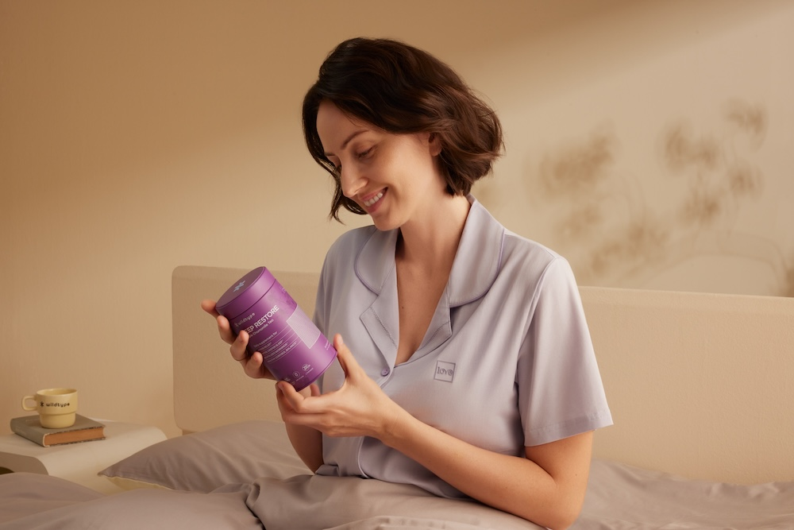

You go to bed on time. You get 7–8 hours of sleep. And yet… you wake up groggy, heavy, and foggy. Coffee barely helps. Your morning feels like a slog.
The truth? It's not about how long you sleep — it's about whether your sleep is actually restorative. Modern stress, screens, and busy schedules can keep your body from fully recovering, leaving you exhausted even after a full night in bed.
Here's what people in 2026 are doing to finally wake up refreshed.
1. Support Deep Sleep With Targeted Nutrients
Not all sleep is created equal. Deep sleep is where your body repairs muscles, restores energy, and rebalances hormones. Chronic stress, late nights, and poor nutrition can make it harder to reach these critical stages. Many people now turn to nutrient support that helps the nervous system relax and promotes deeper, more restorative sleep. Wildtype's Deep Restore is designed to do exactly that, providing a blend of ingredients that work overnight so you wake up feeling clear-headed and energized rather than groggy.

2. Reduce Evening Stimulation
Scrolling on your phone, answering emails, or binge-watching late into the night keeps your nervous system in "alert mode," making it harder to fall asleep and stay in deep recovery cycles. Building a simple wind-down routine — like dimming lights, stretching, journaling, or reading — signals your body that it's time to relax. Even 30 minutes of intentional calm before bed can dramatically improve sleep quality, helping you wake up lighter, clearer, and more refreshed.
3. Prevent Overnight Blood Sugar Dips
Your body doesn't stop working when you sleep — and fluctuations in blood sugar can interrupt deep sleep without you even realizing it. If your glucose drops too low, stress hormones kick in, pulling you out of restorative sleep stages. To counter this, many people focus on balanced dinners with protein, complex carbs, and healthy fats while avoiding sugary snacks late at night. These small adjustments stabilize overnight energy, reduce wake-ups, and leave you feeling more alert and energized in the morning.
4. Anchor Your Circadian Rhythm
Your internal clock, or circadian rhythm, tells your body when to release sleep hormones and when to wake up. Spending most of your day indoors under artificial light can throw this rhythm off, making deep sleep elusive. A simple fix is getting 10–20 minutes of natural sunlight in the morning — or using a bright light lamp if needed. Consistent light exposure helps your body sync its internal clock, making it easier to fall asleep at night and move through restorative sleep stages naturally.
5. Optimize Your Sleep Environment
Even the best bedtime routine can fall flat if your bedroom doesn't support rest. Light, noise, and temperature all affect your ability to reach restorative deep sleep. Simple tweaks — keeping your room cool, blocking out light, reducing noise, and reserving your bed for sleep only — can make a big difference. Pairing these environmental adjustments with consistent bedtime habits helps your body naturally move through deeper sleep cycles, so you wake up truly refreshed.
Getting 7–8 hours in bed isn't enough if your sleep isn't restorative. By supporting deeper sleep, calming your nervous system, stabilizing energy overnight, syncing your circadian rhythm, and optimizing your sleep environment, you can finally wake up feeling restored — clear-headed, energized, and ready for the day.